Dirección: Av. Rigolleau (Calle 14) e/ 131 y 132
Especialidades: Clínica médica, ginecología, obstetricia, patología mamaria.
Turnos consultorios: 0810-444-3700 (Lun a Vie de 9:00 a 16:00 hs).
Espacios de salud gratuitos y cercanos que acompañan a adolescentes y familias en sus necesidades médicas, emocionales y sociales. Conocé dónde podés recibir atención de forma gratuita y cerca de tu casa.
Dirección: Av. 14 entre 131 y 132
Línea de primera escucha: 4356-9200 (Interno 2048) - Jueves de 8:00 a 13:00 hs.
Turnos de Psicología en CAPS: Comunicate al 4356-9200 (Interno del CAPS correspondiente).
Línea de usuarios en tratamiento: 4356-9200 (Interno 2051) - Lunes a viernes de 8:00 a 15:00 hs.
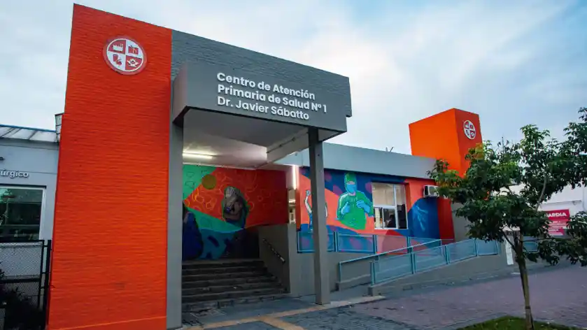
CAPS N°1 - Dr. Javier SábattoDirección: Av. Rigolleau (Calle 14) e/ 131 y 132
Especialidades: Clínica médica, ginecología, obstetricia, patología mamaria.
Turnos consultorios: 0810-444-3700 (Lun a Vie de 9:00 a 16:00 hs).
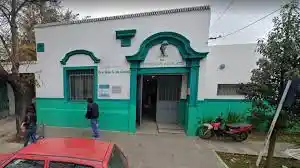
CAPS N°2 - Villa MatildeDirección: Calle 159 e/ 54 y 55 (Hudson)
Teléfono: 4356-9200 Int. 2002
Servicios: Clínica médica y enfermería 24 hs, ginecología y psicología.
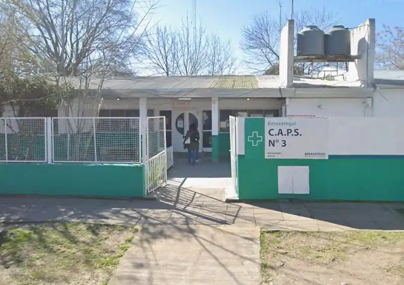
CAPS N°3 - GutiérrezDirección: Calle 457 A y 415 (Gutiérrez)
Teléfono: 4356-9200 Int. 2003
Servicios: Ginecología, psicología y test rápido de VIH.
 CAPS N°4 - Rigolleau
CAPS N°4 - Rigolleau
Dirección: Av. Dardo Rocha e/ 15 y 16
Teléfono: 4356-9200 Int. 2004
Horarios: Lunes a viernes de 8:00 a 16:00 hs.
Servicios: Ginecología, psicología y clínica médica.
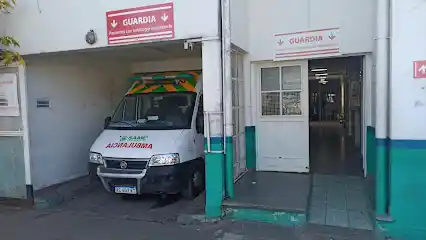
CAPS N°5 - B° JacarandáDirección: Calle 159 B e/ 23 y 24
Teléfono: 4356-9200 Int. 2005
Servicios: Clínica médica, enfermería 24 hs, ginecología, psicología y nutrición.
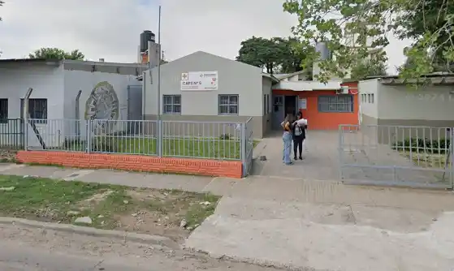
CAPS N°6 - Villa MitreDirección: Calle 30 y 160
Teléfono: 4356-9200 Int. 2006
Horarios: Lunes a viernes de 8:00 a 16:00 hs.
Servicios: Clínica médica y psicología.
Dirección: Calle 10 N° 3119 e/ 131 y 132
Teléfonos: 4256-8049 / 4356-9200 Int. 3010
Horarios: Lunes a viernes de 8:00 a 16:00 hs.
Servicios: Prevención de ITS/VIH, test rápido, ginecología, adolescencia, psicología y servicio social.
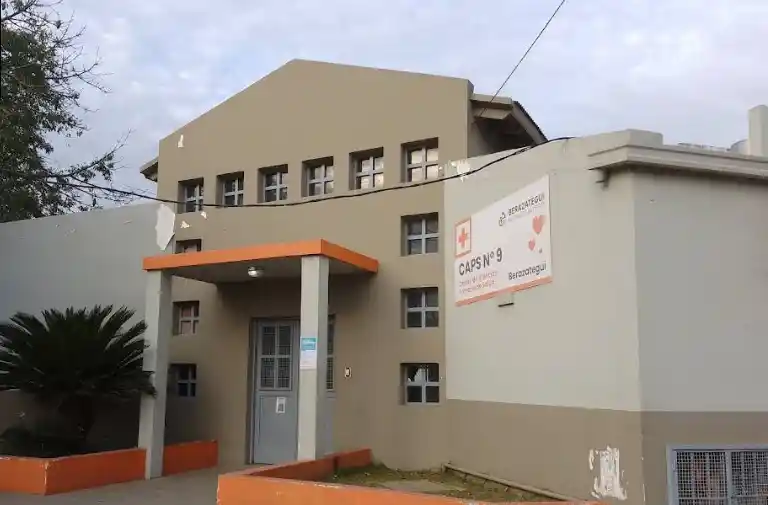
CAPS N°9 - B° Alejandro IDirección: Av. Julieta Lanteri (21) y 125
Teléfono: 4356-9200 Int. 2009
Horarios: Lunes a viernes de 8:00 a 16:00 hs.
Servicios: Ginecología, clínica médica y psicología.
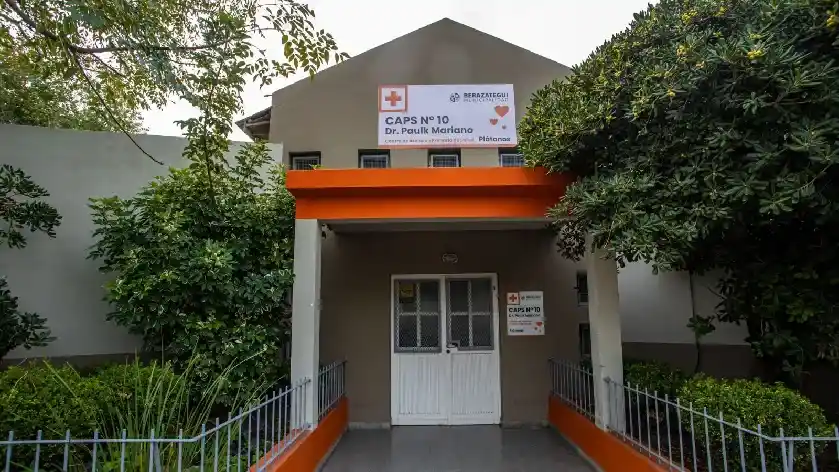
CAPS N°10 - PlátanosDirección: Calle 43 y 157 (Plátanos)
Teléfono: 4356-9200 Int. 2010
Horarios: Lunes a viernes de 7:00 a 18:00 hs.
Servicios: Ginecología, clínica médica y psicología.
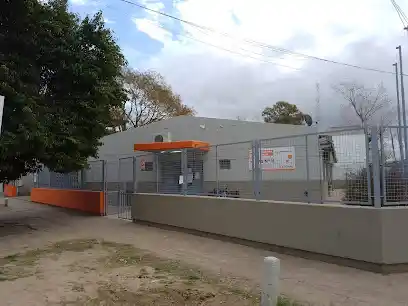
CAPS N°11 - El PatoDirección: Calle 517 y 611 (Ruta 36 Km 38,5)
Teléfono: 4356-9200 Int. 2011
Servicios: Clínica médica y enfermería 24 hs, ginecología, psicología y test VIH.
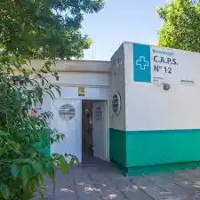
CAPS N°12 - B° BustilloDirección: Calle 54 y 149 (Hudson)
Teléfono: 4356-9200 Int. 2012
Horarios: Lunes a viernes de 8:00 a 16:00 hs.
Servicios: Ginecología, clínica médica y psicología.
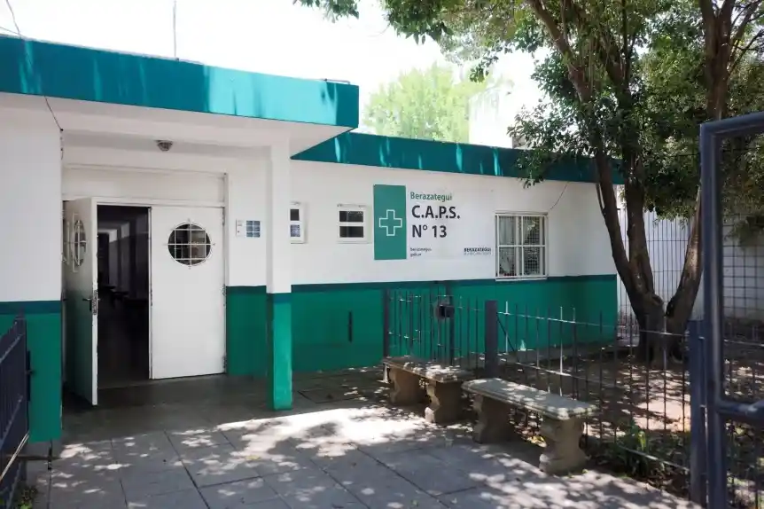
CAPS N°13 - Santa MaríaDirección: Calle 114 y 26
Teléfono: 4356-9200 Int. 2013
Horarios: Lunes a viernes de 8:00 a 16:00 hs.
Servicios: Ginecología, clínica médica y psicología.
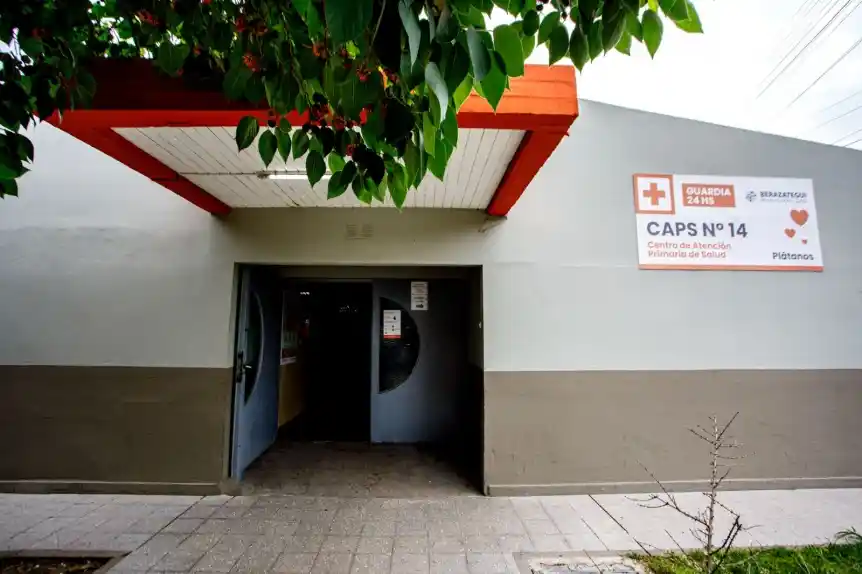
CAPS N°14 - B° La LomaDirección: Calle 151 A y 35
Teléfono: 4356-9200 Int. 2014
Servicios: Guardia clínica y enfermería 24 hs, ginecología y psicología.
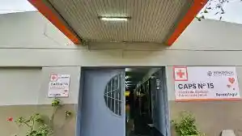
CAPS N°15 - B° GüemesDirección: Calle 110 A y 9
Teléfono: 4356-9200 Int. 2015
Horarios: Lunes a viernes de 8:00 a 16:00 hs.
Servicios: Ginecología, clínica médica y psicología.
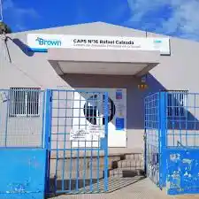
CAPS N°16 - B° UOCRADirección: Calle 156 y 5
Teléfono: 4356-9200 Int. 2016
Horarios: Lunes a viernes de 7:00 a 15:00 hs.
Servicios: Ginecología, medicina general y psicología.
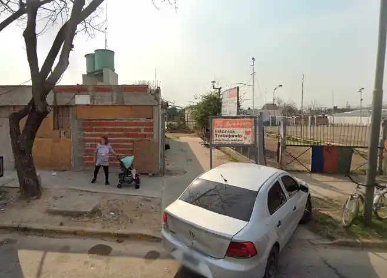
CAPS N°17 - B° LuchettiDirección: Calle 144 e/ 28 y 30
Teléfono: 4356-9200 Int. 2017
Horarios: Lunes a viernes de 7:00 a 15:00 hs.
Servicios: Ginecología, clínica médica y psicología.
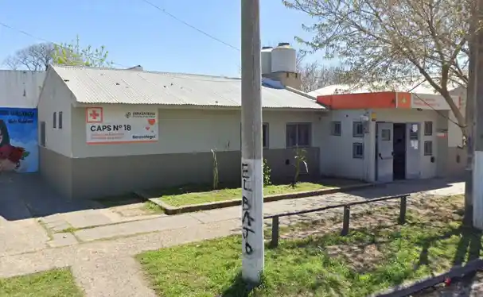
CAPS N°18 - B° Gral. BelgranoDirección: Calle 20 e/ 161 y 162
Teléfono: 4356-9200 Int. 2018
Horarios: Lunes a viernes de 8:00 a 16:00 hs.
Servicios: Ginecología, medicina general, psicología y test VIH.
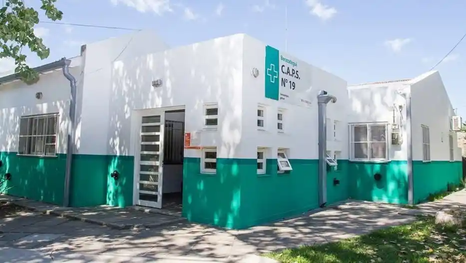
CAPS N°19 - SouriguesDirección: Calle 262 A y 216 (Sourigues)
Teléfono: 4356-9200 Int. 2019
Horarios: Lunes a viernes de 7:00 a 16:00 hs.
Servicios: Ginecología, clínica médica y psicología.
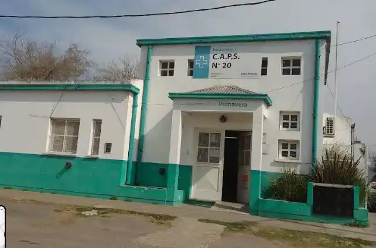
CAPS N°20 - B° PrimaveraDirección: Calle 116 A y 18
Teléfono: 4356-9200 Int. 2020
Horarios: Lunes a viernes de 8:00 a 16:00 hs.
Servicios: Ginecología, clínica médica y psicología.
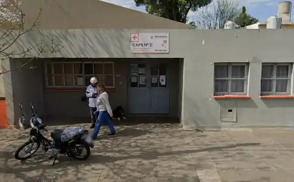
CAPS N°21 - B° Los CiruelosDirección: Calle 3 e/ 129 y 129 A
Teléfono: 4356-9200 Int. 2021
Horarios: Lunes a viernes de 8:00 a 16:00 hs.
Servicios: Ginecología y psicología.
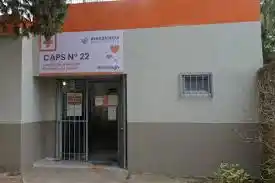
CAPS N°22 - RanelaghDirección: Calle 359 e/ 303 y 304 (Ranelagh)
Teléfono: 4356-9200 Int. 2022
Horarios: Lunes a viernes de 7:00 a 16:00 hs.
Servicios: Ginecología, clínica médica y psicología.
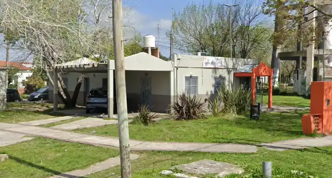
CAPS N°23 - Pueblo NuevoDirección: Calle 59 y 165
Teléfono: 4356-9200 Int. 2023
Horarios: Lunes a viernes de 8:00 a 16:00 hs.
Servicios: Ginecología, clínica médica, psicología y nutrición.
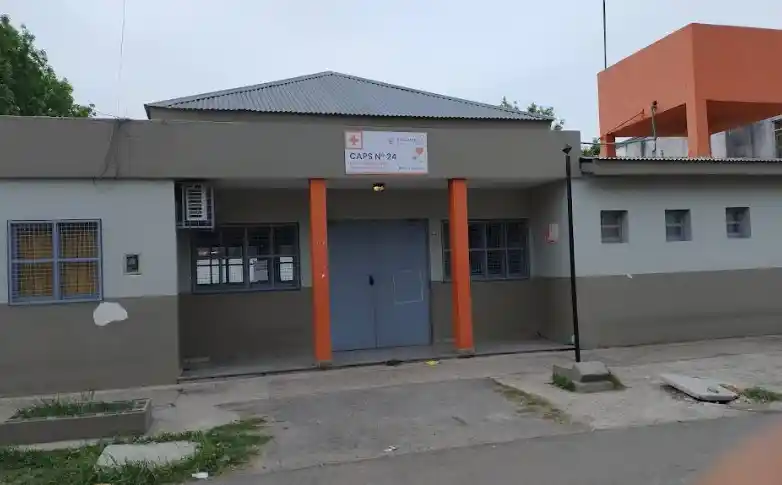
CAPS N°24 - B° 1° de MayoDirección: Calle 122 esq. 1
Teléfono: 4356-9200 Int. 2024
Horarios: Lunes a viernes de 8:00 a 16:00 hs.
Servicios: Ginecología, medicina general y psicología.
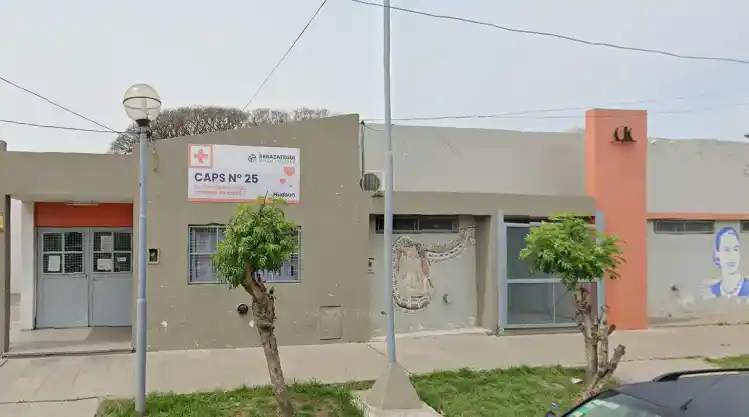
CAPS N°25 - B° MarítimoDirección: Calle 58 e/ 120 y 121
Teléfono: 4356-9200 Int. 2025
Horarios: Lunes a viernes de 8:00 a 20:00 hs.
Servicios: Clínica médica, ginecología, psicología, nutrición y test VIH.
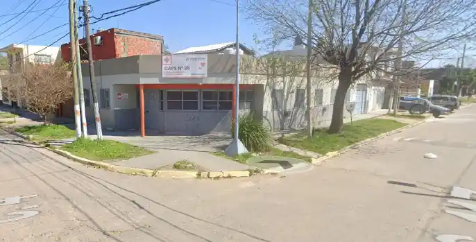
CAPS N°26 - B° San JoséDirección: Calle 4 y 117 A
Teléfono: 4356-9200 Int. 2026
Horarios: Lunes a viernes de 8:00 a 16:00 hs.
Servicios: Clínica médica, ginecología y psicología.
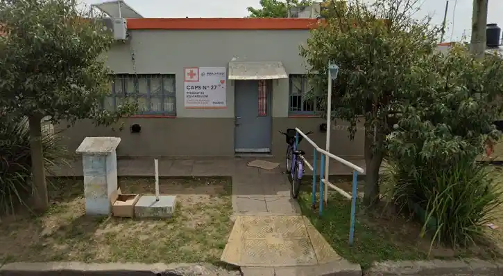
CAPS N°27 - Kennedy NorteDirección: Calle 50 e/ 127 y 128
Teléfono: 4356-9200 Int. 2027
Horarios: Lunes a viernes de 7:00 a 15:00 hs.
Servicios: Clínica médica, ginecología y psicología.
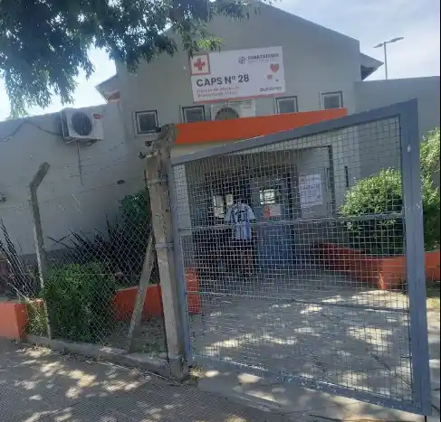
CAPS N°28 - B° Las HermanasDirección: Calle 75 e/ 124 y 127
Teléfono: 4356-9200 Int. 2028
Horarios: Lunes a viernes de 7:00 a 18:00 hs.
Servicios: Medicina general, ginecología y psicología.
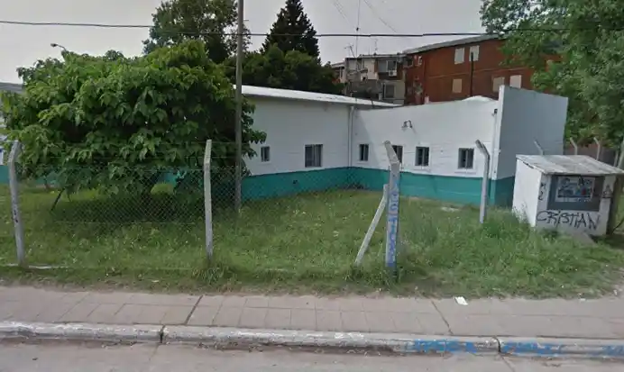
CAPS N°29 - B° LuzDirección: Calle 316 e/ 368 A y 368 B
Teléfono: 4356-9200 Int. 2029
Horarios: Lunes a viernes de 8:00 a 16:00 hs.
Servicios: Clínica médica, ginecología y psicología.
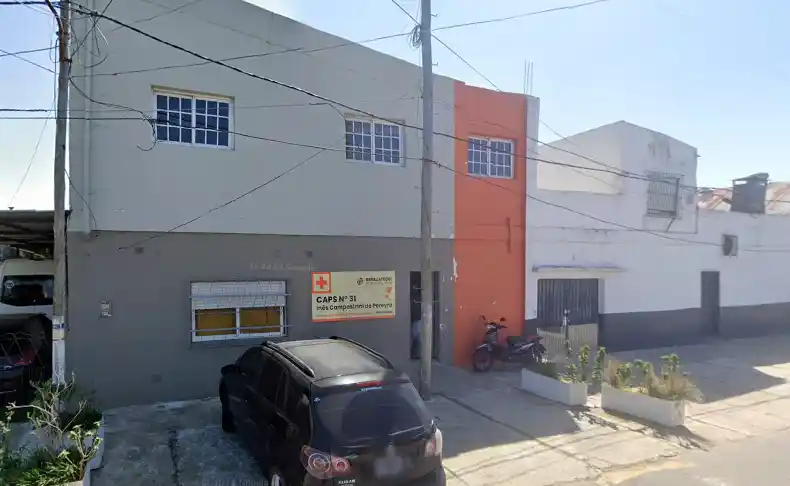
CAPS N°31 - B° San PedroDirección: Calle 12 A e/ 106 y 107
Teléfono: 4356-9200 Int. 2031
Horarios: Lunes a viernes de 8:00 a 16:00 hs.
Servicios: Clínica médica, ginecología y psicología.
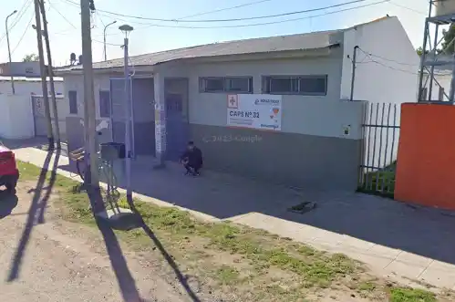
CAPS N°32 - B° AsunciónDirección: Calle 11 e/ 159 A y 160
Teléfono: 4356-9200 Int. 2032
Horarios: Lunes a viernes de 8:00 a 16:00 hs.
Servicios: Medicina general, ginecología y psicología.
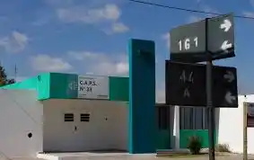
CAPS N°33 - B° 3 de JunioDirección: Calle 161 e/ 44 A y 45 (Ana Goitía)
Teléfono: 4356-9200 Int. 2033
Horarios: Lunes a viernes de 8:00 a 16:00 hs.
Servicios: Clínica médica, ginecología adolescente, test VIH y psicología.
CAPS N°35 - B° 20 de Junio
Dirección: Calle 203 e/ 254 y 255
Teléfono: 4356-9200 Int. 2035
Horarios: Lunes a viernes de 7:00 a 15:00 hs.
Servicios: Clínica médica, ginecología y psicología.
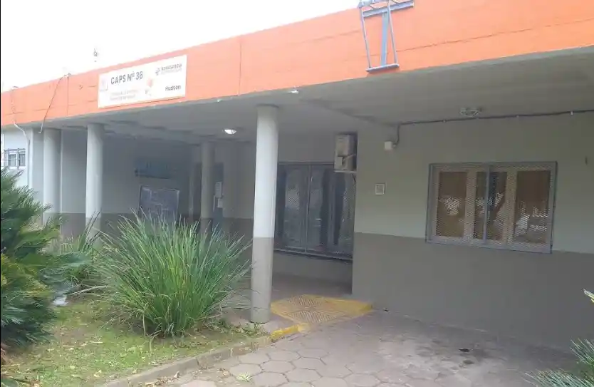
CAPS N°36 - HudsonDirección: Calle 52 B y 134 A (Hudson)
Teléfono: 4356-9200 Int. 2036
Horarios: Lunes a viernes de 8:00 a 16:00 hs.
Servicios: Medicina general, ginecología, psicología y test VIH.
Aviso importante: La información detallada en esta página contempla las especialidades y servicios orientados a la contención de adolescentes y familias. Los CAPS cuentan además con áreas como odontología, laboratorio, pediatría, radiología y vacunatorio. Para la nómina completa de prestaciones, consultá la web municipal.
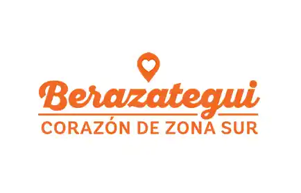
Sitio Oficial de Salud Municipal